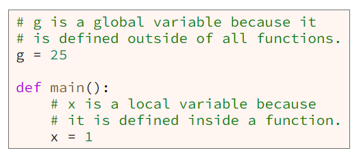

The scope of a variable determines how long that variable exists and where it can be used. Within a Python program, there are two categories of scope: local and global. A variable has local scope when it is defined (assigned a value) inside a function. A variable a global scope when it is defined outside of all functions. Here is a small Python program that has two variables: g and x. g is defined outside of all functions and therefore has global scope. x is defined inside the main function and therefore has local scope.
As shown in the following table, a local variable (a variable with local scope) is defined inside a function, exists for as long as its containing function is executing, and can be used within its containing function but nowhere else. A global variable (a variable with global scope) is defined outside all functions, exists for as long as its containing Python program is executing, and can be user within all functions in its containing Python program.
The following Python code example contains parameters and variables. Parameters have local scope because they are defined within a function, specifically within a function's header and exist for as long as their containing function is executing. The variable "nShapes" is global because it is defined outside of all functions. Because it is a global variable, the code in the body of all functions may use the variable "nShapes". Within the "square_area" function, the parameter named length and the variable named area both have local scope. Within the "rectangle_area" function, the parameters named width and length and the variable named "area" have local scope.
Because local variables are visible only within the function where they are defined, a programmer can define two variables with the same name as long as he defines them in different functions. In the previous example, both of the square_area and rectangle_area functions contain a parameter named length and a variable named area. All four of these variables are entirely separate and do not conflict with each other in any way because the scope of each variable is local to the function where it is defined.
A common mistake that many programmers make is to assume that local variable can be used inside other functions. For example, the Python program in example 3 includes two functions named main and circle_area. Line 6 in main defines a variable named radius. Some programmers assume that the variable radius that is defined in main (ad is therefore local to main only) can be used in the circle_area function. However. local variables from one function cannot be used inside another function. The local variables from main cannot be used inside circle_area.
The correct way to fix the mistake in example 3 is to add a parameter to the circle_area function as shown at line 10 and pass the radius from the main function to the circle_area function as shown at line 7 in example 4.
Python allows function parameters to have default values. If a parameter has a default value, then its corresponding argument is optional. If a function is called without an argument, the corresponding parameter gets its default value.
Consider the program in example 5. Notice at line 19 in the header for the arc_length function, that the parameter radius does not have a default value but the parameter degrees has a default value of 360. This means that when a programmer writes code to call the arc_length function, the programmer must pass a value for radius but is not required to pass a value for degrees. At line 8, the programmer wrote code to call the arc_length function and passed 4.7 for the radius parameter but did not pass a value for the degrees, so during that call to arc_length, the value of degrees will be the default value from line 19, which is 360. At line 13, the programmer wrote code to call the arc_length function again and passed two arguments: 4.7 and 270, so during that call to arc_length, the value of degrees will be 270.
What are the properties of a good function?
There are many things to consider when writing a function, and many authors have written about design concepts that make functions easier to understand and less error prone. The following list contains a few properties that you should incorporate into your functions.